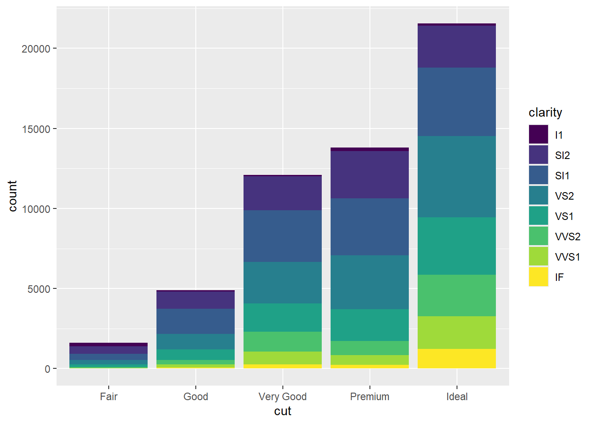
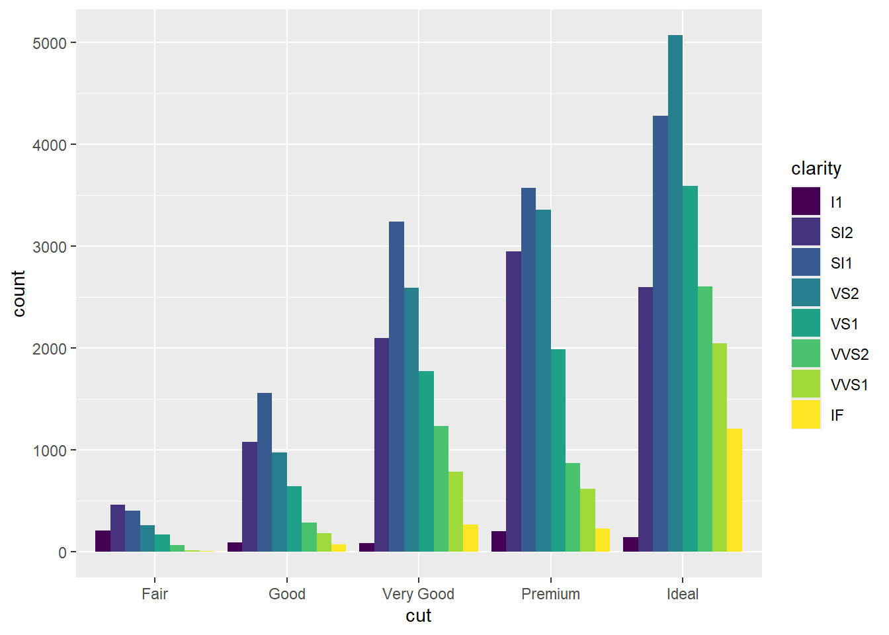
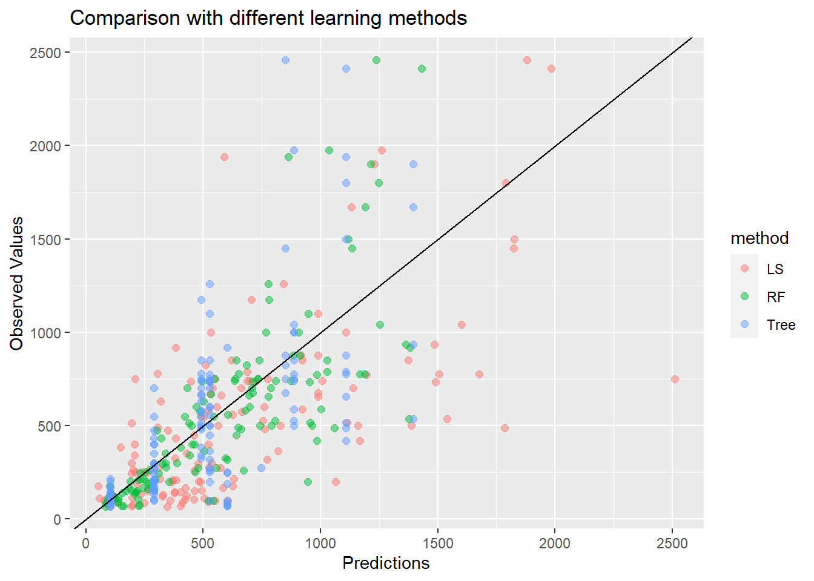
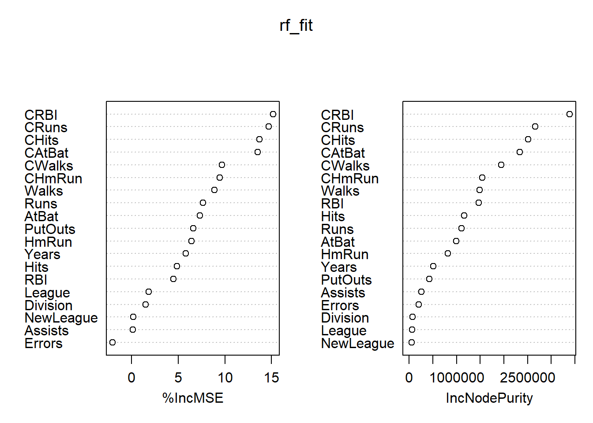
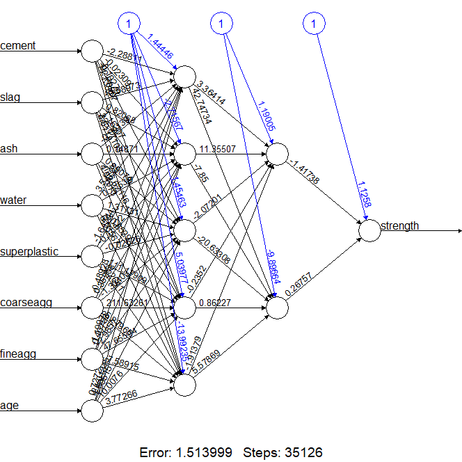

Chapter 1 Introduction
1.1 What is R and RStudio?
R
R is a language and environment for statistical computing and graphics.
R is an interpreted language (individual language expressions are read and then executed immediately as soon as the command is entered)
To download R, go to https://cloud.r-project.org/
RStudio is an integrated development environment (IDE) for R programming
Install R first, then go to https://rstudio.com/products/rstudio/download/ and download RStudio
While you can work in R directly, it is recommended to work in RStudio.
1.2 What will you learn in this course?
Note: we do not assume you know R or any programming language before.
1.2.1 R and R as a programming language
- operators
- control flow (
if..else..,forloop) - defining a function
1.2.2 Data Wrangling
Data wrangling = the process of tidying and transforming the data
1.2.3 Data Visualization
Graphs are powerful to illustrate features of the data. You will learn how to create some basic plots as well as using the package ggplot2 to create more elegant plots.
Consider a dataset about cars.
library(ggplot2)
## Warning: package 'ggplot2' was built under R version 4.0.3
mpg
## # A tibble: 234 x 11
## manufacturer model displ year cyl trans drv cty hwy
## <chr> <chr> <dbl> <int> <int> <chr> <chr> <int> <int>
## 1 audi a4 1.8 1999 4 auto~ f 18 29
## 2 audi a4 1.8 1999 4 manu~ f 21 29
## 3 audi a4 2 2008 4 manu~ f 20 31
## 4 audi a4 2 2008 4 auto~ f 21 30
## 5 audi a4 2.8 1999 6 auto~ f 16 26
## 6 audi a4 2.8 1999 6 manu~ f 18 26
## 7 audi a4 3.1 2008 6 auto~ f 18 27
## 8 audi a4 q~ 1.8 1999 4 manu~ 4 18 26
## 9 audi a4 q~ 1.8 1999 4 auto~ 4 16 25
## 10 audi a4 q~ 2 2008 4 manu~ 4 20 28
## # ... with 224 more rows, and 2 more variables: fl <chr>,
## # class <chr>Among the variables in mpg are:
displ, a car’s engine size, in litres.
hwy, a car’s fuel efficiency on the highway, in miles per gallon (mpg). A car with a low fuel efficiency consumes more fuel than a car with a high fuel efficiency when they travel the same distance.
Scatterplot

Scatterplot, points are labeled with colors according to the class variable

Scatterplots

Line Chart

Bar chart

Another Bar Chart

Boxplot

Histogram

1.2.4 Statistical Inference
Many problems in different domains can be formulated into hypothesis testing problems.
Are university graduates more likely to vote for Candidate A?
Is a treatment effective in reducing weights?
Is a drug effective in reducing mortality rate?
We want to answer these questions that take into account of the intrinsic variability. Formally, we can perform hypothesis testing and compute the confidence intervals.
These are what you learned in STAT 269. It is ok if you haven’t taken the STAT 269. The topics will be briefly reviewed.
We will focus on the applications using R.
1.2.5 Machine Learning
We will illustrate some machine learning methods using real datasets. For example,
Diagnoising breast cancer with the k-NN algorithm
Employ Naive Bayes to build an SMS junk message filter (text data)
A wordcloud of text data
- Use neural network to predict the compressive strength of concrete

1.2.6 Some Numerical Methods
Monte Carlo simulation (estimate probabilities, expectations, integrals)
numerical optimizaiton methods (e.g. maximizing a multi-parameter likelihood function using
optim)
1.2.7 Lastly
It is important to communicate your results to other after performing the data analysis. Therefore, you will do a project with presentation and report.
1.3 Let’s Get Started
The best way to learn R is to get started immediately and try the code by yourselves. We will not discuss every topic in detail at the beginning, which is not interesting and unnecessary. We shall revisit the topics when we need additional knowledge.
Simple arithmetic expression
Comment a code: use the hash mark #
Function for ‘combining’
Assignment (<- is the assignment operator like = in many other programming languages)
y <- c(4, 2, 3) # create a vector called y with elements 4, 2, 3
c(1, 3, 5) -> v # c(1,3,5) is assigned to vOutput
R is case-sensitive. When you type Y, you will see an error message: object ‘Y’ not found
1.4 R Data Structures
Reading: ML with R Ch2
Most frequently used data structures in R: vectors, factors, lists, arrays, matrices, data frames
1.4.1 Vectors
Vector
- fundamental R data structure
- stores an ordered set of values called elements
- elements must be of the same type
- Type: integer, double, character, logical
Integer, double, logical, character vectors
x <- 1:2 # integer vector, we use a:b to form the sequence of integers from a to b
typeof(x) # type of the vector
## [1] "integer"
x <- c(1.1, 1.2) # double vector
typeof(x)
## [1] "double"
length(x) # length of the vector x
## [1] 2
x < 2 # logical (TRUE/FALSE)
## [1] TRUE TRUE
p <- c(TRUE, FALSE)
subject_name <- c("John", "Jane", "Steve") # character vectorCombine two vectors
y <- c(2, 4, 6)
c(x, y) # note that we created x above
## [1] 1.1 1.2 2.0 4.0 6.0
c(y, subject_name) # 2, 4, 6 become characters "2", "4", "6"
## [1] "2" "4" "6" "John" "Jane" "Steve"Assessing elements in the vectors
1.4.2 Factors
A factor is a special type of vector that is solely used for representing categorical (male, female/group 1, group 2, group 3) or ordinal (cold, warm, hot/ low, medium, high) variables.
Reasons for using factor
the category labels are stored only once. E.g., rather than storing
MALE, MALE, MALE, FEMALE, the computer may store1,1,1,2(save memory)many machine learning algorithms treat categorical/ordinal and numeric features differently and may require the input as a factor
Create a factor
1.4.3 Matrix
Matrix
a collection of numbers in a rectangular form
A matrix with dimension
nbymmeans the matrix hasnrows andmcolumns.
Create Matrix: To create a \(3\times 4\) matrix with elements 1:12 filled in column-wise
A <- matrix(1:12, nrow = 3, ncol = 4) # note that we use = instead of <-
A
## [,1] [,2] [,3] [,4]
## [1,] 1 4 7 10
## [2,] 2 5 8 11
## [3,] 3 6 9 12Dimension, number of rows, number of columns of a matrix
# again R is case-sensitive, a and A are different
dim(A) # to find the dimension of A
## [1] 3 4
nrow(A) # to find the number of row in A
## [1] 3
ncol(A) # to find the number of column in A
## [1] 4By default, the matrix is filled column-wise. You can change to row-wise by adding byrow = TRUE
B <- matrix(1:12, nrow = 3, ncol = 4, byrow = TRUE)
B
## [,1] [,2] [,3] [,4]
## [1,] 1 2 3 4
## [2,] 5 6 7 8
## [3,] 9 10 11 12Select rows, columns, submatrix, element
A[1, 2] # select the element in the 1st row and 2nd column
## [1] 4
A[2, ] # select 2nd row
## [1] 2 5 8 11
A[, 3] # select 3rd column
## [1] 7 8 9
A[1:2, 3:4] # select a submatrix
## [,1] [,2]
## [1,] 7 10
## [2,] 8 11Try:
A[c(1, 2), c(1, 3, 4)]A[-1, ]A[, -2]
Combine Two Matrices
cbind(A, B) # combine column-wise
## [,1] [,2] [,3] [,4] [,5] [,6] [,7] [,8]
## [1,] 1 4 7 10 1 2 3 4
## [2,] 2 5 8 11 5 6 7 8
## [3,] 3 6 9 12 9 10 11 12
rbind(A, B) # combine row-wise
## [,1] [,2] [,3] [,4]
## [1,] 1 4 7 10
## [2,] 2 5 8 11
## [3,] 3 6 9 12
## [4,] 1 2 3 4
## [5,] 5 6 7 8
## [6,] 9 10 11 12Try:
rbind(B, A)
Transpose
x <- c(1, 2, 3)
t(x) # transpose
## [,1] [,2] [,3]
## [1,] 1 2 3
Q <- matrix(1:4, 2, 2)
Q
## [,1] [,2]
## [1,] 1 3
## [2,] 2 4
t(Q) # transpose
## [,1] [,2]
## [1,] 1 2
## [2,] 3 4Matrix Addition
A <- matrix(1:6, nrow = 2, ncol = 3)
B <- matrix(2:7, nrow = 2, ncol = 3)
A + B
## [,1] [,2] [,3]
## [1,] 3 7 11
## [2,] 5 9 13
A - B
## [,1] [,2] [,3]
## [1,] -1 -1 -1
## [2,] -1 -1 -1
A + 2
## [,1] [,2] [,3]
## [1,] 3 5 7
## [2,] 4 6 8
c <- c(1, 2)
A + c
## [,1] [,2] [,3]
## [1,] 2 4 6
## [2,] 4 6 8Elementwise Product
A <- matrix(1:6, nrow = 2, ncol = 3)
B <- matrix(1:2, nrow = 2, ncol = 3)
A * B
## [,1] [,2] [,3]
## [1,] 1 3 5
## [2,] 4 8 12
c <- 2
A * c
## [,1] [,2] [,3]
## [1,] 2 6 10
## [2,] 4 8 12
c <- c(10, 100)
A * c
## [,1] [,2] [,3]
## [1,] 10 30 50
## [2,] 200 400 600
c <- c(10, 100, 1000)
A * c # do you notice the pattern?
## [,1] [,2] [,3]
## [1,] 10 3000 500
## [2,] 200 40 6000Matrix Multiplication
A <- matrix(1:12, nrow = 3, ncol = 4) # 3x4 matrix
t(A) # 4x3 matrix
## [,1] [,2] [,3]
## [1,] 1 2 3
## [2,] 4 5 6
## [3,] 7 8 9
## [4,] 10 11 12
t(A) %*% A #3x3 matrix, %*% = matrix multiplication
## [,1] [,2] [,3] [,4]
## [1,] 14 32 50 68
## [2,] 32 77 122 167
## [3,] 50 122 194 266
## [4,] 68 167 266 365
B <- matrix(1:9, nrow = 3, ncol = 3)
B %*% A
## [,1] [,2] [,3] [,4]
## [1,] 30 66 102 138
## [2,] 36 81 126 171
## [3,] 42 96 150 204
A %*% B # error, non-conformable arguments
## Error in A %*% B: non-conformable argumentsDiagonal Matrix
diag(1:4) # diagonal matrix with diagonal elements being 1:4
## [,1] [,2] [,3] [,4]
## [1,] 1 0 0 0
## [2,] 0 2 0 0
## [3,] 0 0 3 0
## [4,] 0 0 0 4
A <- matrix(1:9, 3, 3)
A
## [,1] [,2] [,3]
## [1,] 1 4 7
## [2,] 2 5 8
## [3,] 3 6 9
diag(A) # find the diagonal of A
## [1] 1 5 9How to create an identity matrix in R?
Inverse
The inverse of a \(n \times n\) matrix \(A\), denoted by \(A^{-1}\), is a \(n \times n\) matrix such that \(AA^{-1} = A^{-1} A = I_n\), where \(I_n\) is the \(n\times n\) identity matrix.
To find the inverse of \(A\) in R: solve
Some Statistical Applications
I will mention a few connections of matrices with statistics.
A dataset is naturally a matrix. Suppose that you have \(n\) people. You collected their health information: blood pressure, height, weight, age, whether they smoke (1 if yes, 0 if no), whether they drink (1/0), etc.
Linear regression: we observe \((x,y)\), where \(x\) is a vector of covariates and \(y\) is your response. For example, \(y\) is the blood pressure, \(x\) is the collection of other health information. The linear regression model assumes that \[y = \beta_0 + x^T \beta_1 + \varepsilon,\] where \(\varepsilon\) is the error term. Our goal is to estimate \(\beta:=(\beta_0, \beta_1)\). Let \(X\) be the design matrix. That is \(X\) is a \(n \times p\) matrix where \(n\) is the number of observation, \(p-1\) is the number of covariates. The least squares solution for \(\beta\) is \[\hat{\beta} = (X^T X)^{-1}X^TY.\] We will revisit linear regression later (I know some of you may not know linear regression).
Correlation matrix, Covariance matrix. Let \(X\) be a random vector (column vector). The covariance matrix is defined as \[\Sigma := E[(X-E(X))(X-E(X))^T].\]
1.4.4 Lists
store an ordered set of elements like a vector
can store different R data types (unlike a vector)
# let's create some vectors (of different types)
subject_name <- c("John", "Jane", "Steve")
# at this point, you should notice that meaningful names should be used for the variables
temperature <- c(98.1, 98.6, 101.4)
flu_status <- c(FALSE, FALSE, TRUE)
# notice how we use _ to separate two words
# this is one of the styles in coding, you should be consistent with your style
data <- list(fullname = subject_name, temperature = temperature, flu_status = flu_status)
# you may wonder what is the meaning of temperature = temperature
# in "fullname = subject_name"
# on the left of = is the name of the 1st element of your list
# on the right of = is the name of the variable that you want to
# assign the value to the 1st element
data
## $fullname
## [1] "John" "Jane" "Steve"
##
## $temperature
## [1] 98.1 98.6 101.4
##
## $flu_status
## [1] FALSE FALSE TRUETo assess the element of a list:
1.4.5 Data frames
Data frame can be understood as a list of vectors, each having exactly the same number of values, arranged in a structure like a spreadsheet or database
gender <- c("MALE", "FEMALE", "MALE")
blood <- c("O", "AB", "A")
pt_data <- data.frame(subject_name, temperature, flu_status, gender, blood)
pt_data
## subject_name temperature flu_status gender blood
## 1 John 98.1 FALSE MALE O
## 2 Jane 98.6 FALSE FEMALE AB
## 3 Steve 101.4 TRUE MALE Acolnames(pt_data)
## [1] "subject_name" "temperature" "flu_status" "gender"
## [5] "blood"
pt_data$subject_name
## [1] "John" "Jane" "Steve"
pt_data[c("temperature", "flu_status")]
## temperature flu_status
## 1 98.1 FALSE
## 2 98.6 FALSE
## 3 101.4 TRUE
pt_data[1, ] # like a matrix
## subject_name temperature flu_status gender blood
## 1 John 98.1 FALSE MALE O
pt_data[, 2:3]
## temperature flu_status
## 1 98.1 FALSE
## 2 98.6 FALSE
## 3 101.4 TRUECreate a new column
pt_data$temp_c <- (pt_data$temperature - 32) * 5 / 9
pt_data
## subject_name temperature flu_status gender blood temp_c
## 1 John 98.1 FALSE MALE O 36.72222
## 2 Jane 98.6 FALSE FEMALE AB 37.00000
## 3 Steve 101.4 TRUE MALE A 38.55556
pt_data$fever <- (pt_data$temp_c > 37.6)
pt_data
## subject_name temperature flu_status gender blood temp_c fever
## 1 John 98.1 FALSE MALE O 36.72222 FALSE
## 2 Jane 98.6 FALSE FEMALE AB 37.00000 FALSE
## 3 Steve 101.4 TRUE MALE A 38.55556 TRUE1.5 Operators
| Priority | Operator | Meaning |
|---|---|---|
| 1 | $ |
component selection |
| 2 | [ [[ |
subscripts, elements |
| 3 | ^ (caret) |
exponentiation |
| 4 | - |
unary minus |
| 5 | : |
sequence operator |
| 6 | %% %/% %*% |
modulus, integer divide, matrix multiply |
| 7 | * / |
multiply, divide |
| 8 | + - |
add, subtract |
| 9 | < > <= >= == != |
comparison |
| 10 | ! |
not |
| 11 | & | && || |
logical and, logical or |
| 12 | <- -> = |
assignments |
# $ for list, data frame, etc
subject_name <- c("John", "Jane", "Steve")
temperature <- c(98.1, 98.6, 101.4)
flu_status <- c(FALSE, FALSE, TRUE)
data <- list(fullname = subject_name, temperature = temperature, flu_status = flu_status)
data$fullname
## [1] "John" "Jane" "Steve"
pt_data <- data.frame(subject_name, temperature, flu_status)
pt_data$temperature
## [1] 98.1 98.6 101.4# modulus
7 %% 2 # 7 divided by 2 equals 3 but it remains 1, modulus = reminder
## [1] 1
10 %% 3
## [1] 1
20 %% 2
## [1] 0
# integer division
7 %/% 2
## [1] 3
20 %/% 3
## [1] 6Comparison
# <, >, <=, >=, ==, !=
x <- 2
x > 3
## [1] FALSE
x < 4
## [1] TRUE
x <- c(1, 5, 7)
x < 3 # compare each element with 3
## [1] TRUE FALSE FALSE
x >= 5
## [1] FALSE TRUE TRUE
x == 5 # if x is equal to 5, not x = 5
## [1] FALSE TRUE FALSE
x != 5 # if x is not equal to 5
## [1] TRUE FALSE TRUE& and && indicate logical AND. The shorter form performs elementwise comparisons. The longer form examine only the first element of each vector.
x <- c(TRUE, FALSE, TRUE)
y <- c(FALSE, FALSE, TRUE)
x & y
## [1] FALSE FALSE TRUE
x && y
## [1] FALSE
z <- c(TRUE)
x && z
## [1] TRUE| and || indicate logical OR. The shorter form performs elementwise comparisons. The longer form examine only the first element of each vector.
x <- c(TRUE, FALSE, TRUE)
y <- c(FALSE, FALSE, TRUE)
x | y
## [1] TRUE FALSE TRUE
x || y
## [1] TRUE
z <- c(TRUE)
x || z
## [1] TRUEAssignment
# these assignments are the same, it is recommended to use <-
a <- 2
a
## [1] 2
2 -> b
b
## [1] 2
c = 2
c
## [1] 2Do !(x > 1) & (x < 4) and !((x > 1) & (x < 4)) give different results?
1.5.1 Vectorized Operators
An important property of many of the operators is that they are “vectorized”. This means that the operation will be performed elementwise.
x <- c(1, 2, 3)
y <- c(5, 6, 7)
x + y
## [1] 6 8 10
x * y
## [1] 5 12 21
2 * x # you do not need to use c(2,2,2)*x
## [1] 2 4 6
y / 2 # you do not need to use y/c(2,2,2)
## [1] 2.5 3.0 3.5
A <- matrix(1:9, nrow = 3, ncol = 3)
B <- matrix(1:9, nrow = 3, ncol = 3)
A + B
## [,1] [,2] [,3]
## [1,] 2 8 14
## [2,] 4 10 16
## [3,] 6 12 18
A * B # this is not matrix multiplication, but elementiwse multiplication
## [,1] [,2] [,3]
## [1,] 1 16 49
## [2,] 4 25 64
## [3,] 9 36 81
x <- c(1, 3, 5)
y <- c(2, 2, 9)
x < y
## [1] TRUE FALSE TRUE1.6 Built-in Functions
Common mathematical functions sqrt, abs, sin, cos, log, exp.
To get help on the usage of a function. Use ?. For example, if you want to know more about log. Type ?log in the console. You will then see that by default, log computes the natrual logarithms.
Other useful functions
| Name | Operations |
|---|---|
ceiling |
smallest integer greater than or equal to element |
floor |
largest integer less than or equal to element |
trunc |
ignore the decimal part |
round |
round up for positive and round down for negative |
sort |
sort the vector in ascending or descending order |
sum, prod |
sum and produce of a vector |
cumsum, cumprod |
cumulative sum and product |
min, max |
return the smallest and largest values |
range |
return a vector of length 2 containing the min and max |
mean |
return the sample mean of a vector |
var |
return the sample variance of a vector |
sd |
return the sample standard deviation of a vector |
seq |
generate a sequence of number |
rep |
replicate elements in a vector |
Note:
If you have data \(x_1,\ldots,x_n\), the sample variance is defined as \[ S^2_n := \frac{1}{n-1} \sum^n_{i=1}(x_i-\overline{x}_n)^2. \] Note that we divide the sum by \(n-1\) but not \(n\). The sample standard deviation is the square root of the sample variance.
x <- 1:5
y <- sqrt(x)
y
## [1] 1.000000 1.414214 1.732051 2.000000 2.236068
ceiling(y)
## [1] 1 2 2 2 3
sum(x)
## [1] 15
prod(x)
## [1] 120
cumsum(x)
## [1] 1 3 6 10 15
cumprod(x)
## [1] 1 2 6 24 120
min(x)
## [1] 1
max(x)
## [1] 5
range(x)
## [1] 1 5
mean(x)
## [1] 3
var(x)
## [1] 2.5
rep(0, 10) # create a vector of length 10 with all elements being 0
## [1] 0 0 0 0 0 0 0 0 0 0
rep(1, 10) # create a vector of length 10 with all elements being 1
## [1] 1 1 1 1 1 1 1 1 1 11.6.1 sort()
1.6.2 seq()
This is an example of function with more than one argument.
# seq(from, to)
seq(1:5)
## [1] 1 2 3 4 5
seq(from = 1, to = 5)
## [1] 1 2 3 4 5
# seq(from, to, by)
seq(1, 5, 2)
## [1] 1 3 5
seq(from = 1, to = 5, by = 2)
## [1] 1 3 5
# seq(from, to, length)
seq(0, 10, length = 21)
## [1] 0.0 0.5 1.0 1.5 2.0 2.5 3.0 3.5 4.0 4.5 5.0 5.5
## [13] 6.0 6.5 7.0 7.5 8.0 8.5 9.0 9.5 10.0
seq(from = 0, to = 10, length = 21)
## [1] 0.0 0.5 1.0 1.5 2.0 2.5 3.0 3.5 4.0 4.5 5.0 5.5
## [13] 6.0 6.5 7.0 7.5 8.0 8.5 9.0 9.5 10.01.6.3 rep()
1.7 Some Useful RStudio Shortcuts
See also https://support.rstudio.com/hc/en-us/articles/200711853-Keyboard-Shortcuts
- Ctrl + 1: Move focus to the Source Editor (when you are in the Console)
- Ctrl + 2: Move focus to the Console (when you are in the source window)
- \(\uparrow\) (the up arrow key on the keyboard): go to the previous command (in the console)
- \(\downarrow\) (the down arrow key on the keyboard): go to the next command (in the console)
- Esc: Delete the current command/ Interrupt currently executing command
- Ctrl + Tab: go to the next tab
1.9 Comments to Exercises
These are comments but not answers but you can get the answers immediately by running the code.